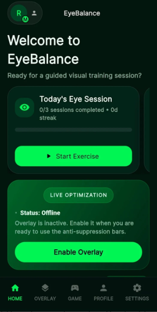
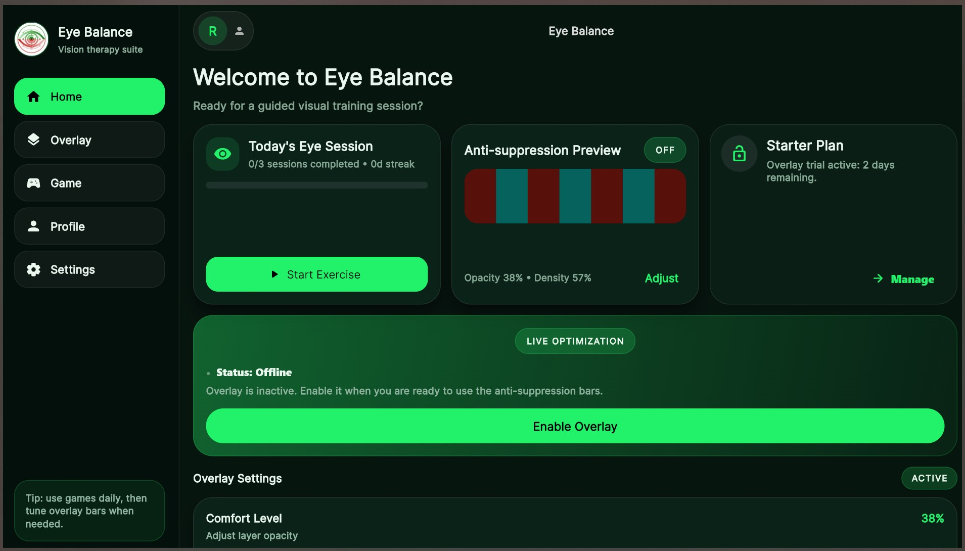

Improve Your Binocular Vision
Eye Balance is a tool for guided binocular vision training featuring eye exercise games and anti-suppression overlay controls. Works best with anaglyphic glasses.

About Eye Balance
Understanding your vision health journey
What is Binocular Vision?
Binocular vision is the ability to use both eyes together effectively. When your eyes work as a team, they create a single image in your brain, allowing for depth perception and comfortable vision.
The Science Behind Eye Balance
Our application uses evidence-based techniques for vision therapy, including anti-suppression exercises that help both eyes work together. The games are designed to challenge and improve binocular vision skills through fun, interactive activities.
Anaglyphic Technology
Eye Balance utilizes anaglyphic (red-green/blue) glasses technology to create visual separation between eyes. This allows for precise control over what each eye sees, enabling targeted suppression therapy.
Our Mission
At Eye Balance, we believe that vision therapy should be accessible, engaging, and effective. Our mission is to provide a digital solution that makes binocular vision training available to anyone, anywhere.
How It Works
The application works by displaying different visual stimuli to each eye through the anaglyphic glasses. The anti-suppression bars gradually encourage the suppressed eye to participate more actively in vision. Regular training sessions can lead to improved binocular coordination.
Safe and Non-Invasive
Eye Balance offers a drug-free, non-invasive approach to vision training. While our exercises are based on established vision therapy principles, they should complement, not replace, professional eye care.

Key Features
Discover what Eye Balance offers
Interactive Games
Engaging eye exercise games designed to make vision training fun and effective.
Overlay Controls
Customizable anti-suppression overlay controls for personalized therapy sessions.
Progress Tracking
Monitor your improvement with built-in progress tracking and session history.
Cross-Platform
Available on Android and Windows for training anytime, anywhere.
Subscription Model
Simple, transparent pricing for everyone
Free Premium Trial
New users receive a free 5-day premium trial with full access to all features.
Starter Plan
After the trial, accounts automatically transition to the Starter plan.
Flexible Subscription
The Starter plan keeps all games free. Subscribe monthly or yearly to access anti-suppression bars.
Frequently Asked Questions
Get answers to common questions
We recommend starting with 10-15 minute sessions, 3-4 times per week. Consistency is more important than duration. Always listen to your body and take breaks if you feel eye strain or discomfort.
Yes, Eye Balance works best with anaglyphic (red-green or red-blue) glasses. These are commonly available online. The glasses create the necessary visual separation for effective anti-suppression training.
No, Eye Balance is not a substitute for professional eye care. Always consult with an eye care professional for proper diagnosis and treatment of vision conditions. This app is meant to complement, not replace, professional vision therapy.
Eye Balance is designed for users aged 8 and above. Children should use the app under adult supervision. The exercises are adaptable and can be adjusted for different age groups and vision needs.
Yes, you can cancel your subscription at any time through your respective app store account. After cancellation, you'll retain access to premium features until the end of your current billing period.
Important Medical Disclaimer
Eye Balance does not provide medical advice. This application is not intended to diagnose, treat, cure, or prevent any disease. Always consult with a qualified healthcare professional before beginning any vision therapy program. The app is designed for entertainment and general wellness purposes only. Individual results may vary and are not guaranteed.